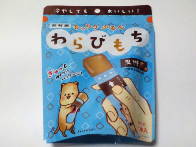

井村屋のわらびもち黒糖
2023/03/10

個包装のわらび餅です。袋をギューッと押すとわらび餅が出てきます。出たのを口で受けて食べます。
道具なしで手軽に食べれて便利です。
わらび餅が飛び出し過ぎて落ちるんじゃないかと、ドキドキしながら食べました。
和菓子って感じじゃなくて、黒糖ゼリーな気分で食べました。
三重県津市高茶屋七丁目1番1号
2023/03/10

個包装のわらび餅です。袋をギューッと押すとわらび餅が出てきます。出たのを口で受けて食べます。
道具なしで手軽に食べれて便利です。
わらび餅が飛び出し過ぎて落ちるんじゃないかと、ドキドキしながら食べました。
和菓子って感じじゃなくて、黒糖ゼリーな気分で食べました。